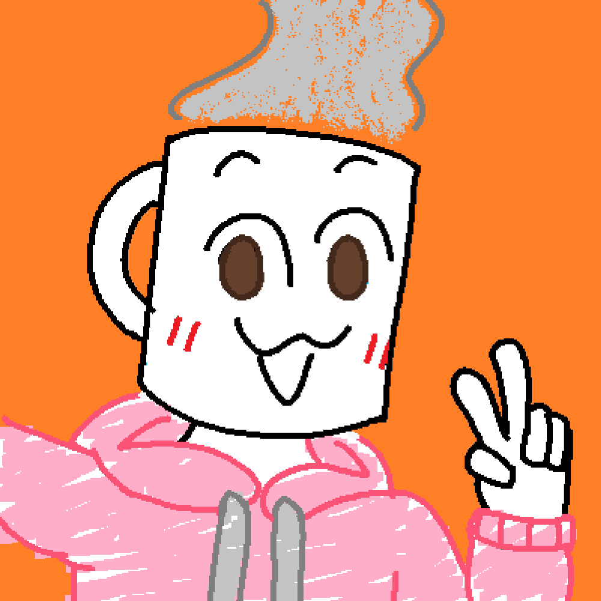

That's right! I draw
Well, barely, but still :P

I am an (amateur) artist! I can draw ideas I am thinking of, though not very high in quality. I have been drawing since... I think it was summer of 2022? Really appreciate all the people who supported me thus far on my journey.
Shoutout to all these artists
Their icons can be viewed by opening them on new tab
Artists with blank icons mean they didn't submit an icon
Artists without icons I don't consider friends, though I'm always open to add a new icon if you know what I mean :P
- U, :P
- Aymbord, who was one of the people who assisted me during my first month drawing.
- Lee, who was one of the people who assisted me during my first month drawing.
-
 Silvio, a long time friend of mine as well as an incredible artists.
Silvio, a long time friend of mine as well as an incredible artists.
- 20%, an artist whom I admired for long before finally becoming acquainted; also their bugs are jgpvxdfkapfj
- SwiftWing, honestly just cool in general lol
-
 Alexsio, I don't know what to say
Alexsio, I don't know what to say
-
94871487, a
n absolute buffoonpretty good artist, and generally cool so (congrats on the promotion from alright to good) - Ran, Twitter artist I met who turned out to be quite a nice person! big men warning
-
mothcupmothcpu, really how can I not include him he hits all my checks for cool person - Pako, shoutout cuz geolocation
- Minbitt, cool tv head!!!
- Tat/Tɐsh (stylized as TⱯSH), I really like his artstyle and also slimy boi squissquissquish
-
___, bit of a language barrier but that hasn't stopped the chats :P
-
 IBuru002,
IBuru002, kiss the radiovery nice anatomy and also tv heads - Hazard, idk I like the square heads and character design
-
Knife, first (well, second if counting Silv) artist I saw on Twitter, so very detailed
啊啊啊啊啊怎麽可以畫得這麽精細的 ğŸ˜ğŸ˜ - KLOPPY, CUTE!!!!!!!!!!!
-
Hydraxous, first found his Create mod video (really cool storage system btw),
then refound him from ULTRA
BALLINFUNGUNS
I guess computer science counts as art, even though I already have a CS page - mellow fellow, last name was kinda weird but whatevs, and also bunnies everywhere I like it
-
三三å (3000), tv :D
精細，沒什麽其他好説的 - オカメさん (Okame-san or Mr. Okame ig), very cool apocalyptic world
-
Aleod, robots, really like the anatomy and posing
hhh,h,,,hott't.,gttht - CH, cute tvs
- Zavy, tall (and probably bi? idk) robots
- SkyFlake, HOW THE FUCK DOES HE COLOR HIS DRAWINGS?!?!?!?!?!?
- Key, 97.1625% (error: 0.00000000015%) gay objectheads
- Pear哥, just a shoutout
- MaxiSundae, anyone up for furry tv heads??
- Liz, fluffy sona and ULTRAKILLA
- Bucket, THE SHADING AAAAAAAAAAA
-
Bronze, THE SHADING AAAAAAAAAAA (also twin of bucket)
- Thruii, math man
-
Voidy, not sure what they're addicted to actually but I like it
- Ozdical, orange tv is real
-  Coffee, cute
- Vinny, guaranteed mention cuz screenhead
- SkyHeart, weird eye cat and more importantly tv!!!!!!!!
- aueua, HOLY SHIT A ROBOT
- sope, the funny robot manga drawer
- Starry, surprisingly wholesome british artist also genuinely an adorable person
-
supergee, G
also an epic racer who actually does stuff irl
holy shit I want to make a pc head so bad
Oh yeah also, have my art accounts:
- Tumblr Art Blog
- Twitter, unfortunately
- ✨✨Instagram✨✨
- DeviantArt (I haven't posted anything yet)
- ToyHouse
My main OC: